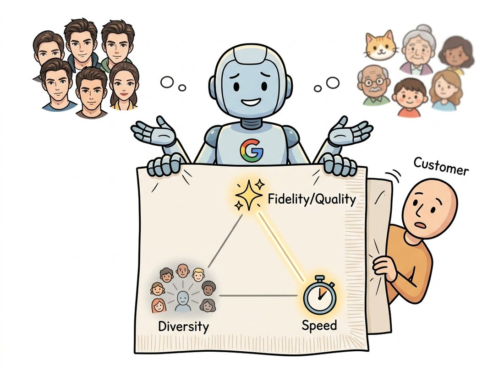

"They asked for pictures that were beautiful, varied, and instant. I drew them two of the three on a napkin and said pick. They kept turning the napkin over hoping a fourth corner would appear. It never does. I have checked many times."
A Generative Model With Opinions About Trade-offs
A generator is judged on three things, and you usually get to keep two. Fidelity (do individual samples look real?), coverage (does the model produce the full variety of the data, or only a slice?), and speed (how many network passes does one sample cost?) pull against each other, and no single family wins all three. This is the quality-diversity-speed trilemma (sketched in the napkin illustration below), and it is the practitioner's compass for the entire part. This section first separates two ideas that beginners often conflate, the likelihood a model assigns and the visual quality of its samples, which can move in opposite directions. It then states the trilemma, locates each family from Section 30.2 on it, and explains why diffusion's position, top quality and full coverage but slow sampling, launched a research wave aimed squarely at the speed corner. Reading a generative paper, you can usually predict its contribution by asking which corner of this triangle it is trying to bend.

The map of Section 30.2 told you the families; the latent and score machinery of Section 30.3 and Section 30.4 told you how they work. This section gives you the lens for judging the result. We start with what sampling and likelihood actually mean, show why a model can have excellent likelihood and mediocre-looking samples (or the reverse), then formalize the three-way trade that governs every design decision in the part. By the end you will read each subsequent chapter not as a parade of methods but as a series of moves on one triangle, which is exactly how the field thinks about its own progress.
1. What Sampling Actually Computes Beginner
Sampling means drawing an $\mathbf{x}$ such that, over many draws, the empirical distribution matches the model's $p_\theta(\mathbf{x})$. The cost of one draw, the sampling cost, is the number of expensive operations (network forward passes) it takes, and it varies enormously across families, as the sampling-signature code in Section 30.2 showed. A VAE, GAN, or flow samples in a single pass; an autoregressive model needs one pass per pixel; a diffusion model needs one pass per reverse step. Speed is therefore not an implementation detail but a structural property of the family, set by the shape of the sampling loop. The table below restates the cost in concrete numbers for a typical image, to make the orders of magnitude vivid.
| Family | Network passes per sample | Why |
|---|---|---|
| VAE / GAN / Flow | 1 | One forward pass: latent or noise to image |
| Diffusion (vanilla) | 50 to 1000 | One pass per reverse denoising step |
| Diffusion (fast samplers) | 4 to 50 | Better solvers and distillation cut the steps |
| Consistency / few-step | 1 to 4 | Distilled to approach single-pass sampling |
| Autoregressive (per-pixel) | thousands | One pass per pixel or token, sequentially |
The spread in Table 30.5.1, from one pass to thousands, is three orders of magnitude, and it is the single biggest practical difference between families. It is why a GAN can run as a real-time video filter while a vanilla diffusion model cannot, and why the fast-sampler and distillation rows exist at all: they are the field's response to diffusion's cost. We return to them at the end of the section.
2. Likelihood Is Not Quality Intermediate
A model's likelihood on held-out data, $p_\theta(\mathbf{x})$ for real test images, measures how much probability mass the model puts where the data actually is. It is the natural training objective for the probabilistic families (flows, autoregressive models, the VAE's bound). It is tempting to assume that higher likelihood means better-looking samples. It does not, and the disconnect is one of the most important facts in generative modeling. Theis, van den Oord, and Bethge made the point sharply in 2016: log-likelihood and sample quality are largely independent, and optimizing one is no guarantee of the other.
Two mechanisms drive them apart. First, in high dimensions, average log-likelihood is dominated by getting the bulk statistics and the low-frequency structure right; a model can score well on likelihood while its samples look slightly blurry, because the perceptually crucial high-frequency detail contributes little to the likelihood number. This is the VAE's characteristic failure (good bound, soft samples). Second, a model can produce gorgeous samples while assigning near-zero probability to large regions of the true data, that is, high quality but terrible coverage; a GAN suffering mode collapse is the extreme case, and GANs do not even define a likelihood to expose the problem. The lesson is that you must measure what you care about: if you care about how samples look and how varied they are, likelihood is the wrong yardstick, and the perceptual and distributional metrics of Section 30.6 are the right ones.
Imagine two models of a face dataset with identical held-out log-likelihood. Model A spreads its mass slightly too broadly, so it covers every kind of face but its individual samples are a touch soft. Model B concentrates on the most common face types, so its individual samples are crisp but it never produces the rarer faces at all. Same likelihood, completely different behavior: A trades fidelity for coverage, B trades coverage for fidelity. Likelihood, a single scalar, cannot tell them apart, which is exactly why generative evaluation needs at least two numbers, one for fidelity and one for coverage. This insight is the bridge from this section's trilemma to the precision-and-recall metrics of Section 30.6.
3. The Trilemma, Stated Intermediate
Putting the pieces together gives the central organizing principle of the part. Every generator is scored on three desiderata, and improving any two tends to cost you the third:
- Fidelity (quality): do individual samples look like real, sharp, artifact-free images?
- Diversity (coverage): does the model reproduce the full variety of the data distribution, every mode, rather than a favored subset?
- Speed: how few network passes does one sample cost?
This is the quality-diversity-speed trilemma (named as such by Xiao, Kreis, and Vahdat in 2022, in the context of denoising diffusion). Figure 30.5.1 places the families at the trilemma's corners and edges, and the geometry tells the story: each family sits near the two corners it favors and far from the one it sacrifices.
The code below makes the diversity axis concrete by quantifying mode coverage on a toy mixture, the measurement that distinguishes a collapsed generator from a healthy one. It is the simplest possible diversity probe and the conceptual seed of the recall metric in Section 30.6.
# Measure diversity directly: what fraction of the data's modes does a generator
# actually cover? This recall proxy separates a collapsed generator (few modes hit)
# from a healthy one (all modes hit), independent of how sharp each sample looks.
import torch
# A toy data distribution with 8 well-separated modes arranged in a ring.
angles = torch.linspace(0, 2 * torch.pi, 9)[:-1] # 8 angles around the circle
modes = torch.stack([torch.cos(angles), torch.sin(angles)], dim=1) * 4
def mode_coverage(samples, modes, radius=0.7):
"""Fraction of the 8 modes that have at least one nearby sample (a recall proxy)."""
d = torch.cdist(samples, modes) # (n_samples, 8) distances
covered = (d.min(dim=0).values < radius) # is each mode hit by some sample?
return covered.float().mean().item()
# A healthy generator hits all modes; a collapsed one hits only a few.
healthy = modes[torch.randint(0, 8, (500,))] + 0.1 * torch.randn(500, 2)
collapsed = modes[torch.randint(0, 2, (500,))] + 0.1 * torch.randn(500, 2) # only 2 modes
print("healthy coverage: ", mode_coverage(healthy, modes)) # healthy coverage: 1.0
print("collapsed coverage:", mode_coverage(collapsed, modes)) # collapsed coverage: 0.25mode_coverage function uses torch.cdist to check whether each true mode has a nearby sample: the healthy generator scores 1.0 (all eight hit) while the collapsed generator, drawing only from modes 0 and 1, scores 0.25 even though each of its samples may look perfectly sharp. Fidelity per sample and coverage of the distribution are genuinely different quantities, which is why the trilemma needs both as separate axes.Who: a machine-learning team generating synthetic images to augment a medical-imaging classifier for a rare condition. Situation: real positive examples were scarce, so they trained a GAN on the available positives and planned to flood the training set with synthetic ones. Problem: the GAN's samples looked superb, radiologists on the team could not distinguish them from real scans, and yet the downstream classifier trained on the augmented set barely improved, and on some rare presentations got worse. Decision: rather than trust the eye-test fidelity, they measured coverage with a mode-coverage probe like the one above, computed in a feature space. The result was stark: the GAN had collapsed onto the two or three most common presentations of the condition and was producing almost none of the rare variants, which were exactly the cases the classifier needed help with. They switched to a diffusion-based generator, accepting slower sampling, because its coverage was far better, and retrained. Result: the diffusion-augmented classifier improved on the rare presentations the GAN had silently dropped. Lesson: per-sample fidelity, however convincing to a human, says nothing about coverage, and for data augmentation coverage is the property that matters. The trilemma is not abstract; choosing the wrong corner here would have shipped a classifier blind to the cases it most needed to catch. This data-engine use of generators returns in full in Chapter 37.
Beautiful, varied, and instant: pick two. This is the project-management triangle in a lab coat, and generative models obey it with the same grim reliability as your last software deadline. The whole research literature is the sound of thousands of people turning the napkin over, hoping a fourth corner appears. It still does not.
4. Why Diffusion's Speed Problem Launched a Field Intermediate
Diffusion models landed in the enviable position of Figure 30.5.1: top fidelity and full coverage, the two corners hardest to get together. Their single weakness was the speed corner, vanilla sampling needed hundreds to a thousand network passes per image. Because the other two corners were already won, an enormous research effort poured into the third, and it is worth knowing the shape of that effort because it organizes much of Chapter 33. The attacks come in two flavors. Better solvers treat sampling as numerically integrating a differential equation (the score-SDE or its deterministic ODE form) and use higher-order integrators (DDIM, DPM-Solver) to take far fewer, larger steps, cutting a thousand passes to twenty or fifty with little quality loss. Distillation trains a student network to reproduce in one or a few passes what the teacher diffusion model does in many, the route of progressive distillation and consistency models, pushing toward the single-pass speed of a GAN while keeping diffusion's coverage.
You do not implement these fast samplers yourself; you select them. In diffusers, swapping a slow scheduler for a fast one and changing the step count is a two-line edit that moves you along the speed axis of the trilemma:
# Move along the speed axis of the trilemma without retraining: swap the scheduler.
# The same trained model sampled with a higher-order solver at 20 steps runs roughly
# fifty times faster than a basic sampler at ~1000 steps, at similar quality.
from diffusers import DDPMScheduler, DPMSolverMultistepScheduler
# Slow but simple: hundreds to a thousand steps.
slow = DDPMScheduler.from_pretrained("model-id") # ~1000 passes per image
# Fast solver: comparable quality in far fewer steps.
fast = DPMSolverMultistepScheduler.from_pretrained("model-id")
# pipe.scheduler = fast; pipe(num_inference_steps=20) # ~20 passes per imageDDPMScheduler (about a thousand passes) with a higher-order DPMSolverMultistepScheduler at twenty steps keeps the same trained model but samples roughly fifty times faster at similar quality, the library form of trading the speed corner against nothing it already owns.The same trained model, sampled with a higher-order solver and 20 steps instead of a basic sampler at 1000, runs roughly fifty times faster at similar quality. The line-count cost of the speedup is one scheduler swap; the mathematics it packages (treating sampling as ODE integration) is the content of Chapter 33. The trilemma is, in practice, a set of knobs the library exposes.
The 2023 to 2026 frontier is the drive to collapse diffusion's step count toward one while keeping its quality and coverage, exactly the arrow in Figure 30.5.1. Consistency models (Song et al., 2023) and latent consistency models (Luo et al., 2023) distill multi-step diffusion into one-to-four-step samplers; adversarial distillation methods such as SDXL-Turbo and SD3-Turbo (Sauer et al., 2023 to 2024) reintroduce a GAN-style discriminator on top of a diffusion student to recover sharpness at a single step, a literal fusion of two corners of the triangle. Flow matching and rectified flow (Lipman et al. and Liu et al., 2023) straighten the noise-to-data path so that even few-step integration stays accurate, the basis of the rectified-flow transformers behind Stable Diffusion 3 (Esser et al., 2024) and FLUX.1 (Black Forest Labs, 2024). The remarkable thing is that none of this work touches fidelity or coverage; it is a concentrated, multi-year assault on the single corner diffusion did not already own. Watching which corner a new method targets, and what it gives up to get there, is the fastest way to understand its contribution.
5. The Compass for the Rest of the Part Beginner
You now hold the practitioner's compass. Sampling cost is structural, set by the family; likelihood and visual quality are different things that can move in opposite directions; and fidelity, diversity, and speed form a triangle on which every generator and every advance can be placed. When you read Chapter 32 on GANs, watch the diversity corner (mode collapse and its fixes); when you read Chapter 33 on diffusion, watch the speed corner. The only remaining foundational tool is how to actually measure the fidelity and diversity axes for real images, since the eye-test is not enough, as the medical-imaging story showed. That measurement problem is the subject of the final section.
Reread the Key Insight describing two models with identical held-out likelihood but opposite sample behavior. Construct your own concrete example with a one-dimensional or two-dimensional toy distribution: describe two models that would plausibly tie on average log-likelihood while one favors fidelity and the other coverage. Explain which single scalar metric would fail to separate them and which pair of metrics would succeed, connecting your answer forward to Section 30.6.
Using the mode-coverage probe from Section 3, run a small experiment that makes the fidelity-versus-diversity trade visible. Generate samples from the eight-mode toy distribution under a parameter that controls how concentrated the generator is (for example, sample modes from a temperature-scaled categorical: low temperature concentrates on few modes, high temperature spreads out). Sweep that parameter, and for each value record both a per-sample fidelity proxy (mean distance to the nearest true mode) and the mode-coverage number. Plot fidelity against coverage across the sweep and describe the trade-off curve you see in one or two sentences.
A teammate reports that switching their diffusion sampler from 1000 steps to 8 steps made generation forty times faster but their images now look slightly oversmoothed and a few previously distinct output styles have disappeared. Using the trilemma and the two attack strategies (better solvers versus distillation) from Section 4, diagnose what likely happened on each of the three axes, and recommend two concrete things they could try to recover the lost quality and diversity without returning all the way to 1000 steps. Justify each recommendation by naming the corner it targets.